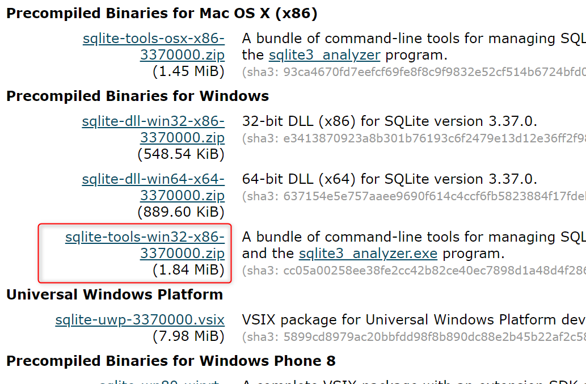
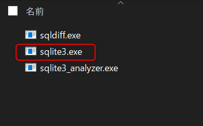

Windows10にSQLiteをインストール→テーブル作成まで | Windows向け
SQLite3について
SQLiteは2GBまでというのが定説だった。
しかしSQLite3からは最大128TiBまで扱える。
ただ所詮はファイルなのでOSのファイルシステムに依存することになる。FAT32だと最大4GBないし、2GBである。
FAT32のPCがまだあるのか分からないが、別のPCでSQLite3を動かすには注意が必要だ。
2021年現在、Windows搭載PCではNTFSがよく見られる。NTFSの1ファイル容量制限はない。
つまり128TiBまで扱えるということになる。実際のところはどうなのかは未検証。
ファイルシステム
sqliteのデータベースファイルで大きなデータを扱うこともあるかもしれない。なのでosごとのファイルシステムについて気を付ける。
2021年現在は動画ファイルを頻繁に扱うようになり数GBのファイルなど珍しくもない。そんなに気にする必要はないだろう。
| ファイルシステム | 説明 |
|---|
| FAT32 |
1ファイルの容量は4GB。(Windows98系は2GB)
2021年現在は見かけない。
|
| NTFS |
1ファイルの容量制限なし。 2021年現在使用している私のパソコンはこれだった。macOSでは読み取りのみで書き込みはできない。
|
| exFAT |
マイクロソフトのものらしいがMacでも利用可能。内臓ハードディスク向けではない。USBメモリ向けかな。
|
| HFS |
1ファイルの最大サイズは約2GB。Mac用。2016年にサポート終了
|
| HFS＋ / APFS |
Mac用
|
インストールからテーブル作成まで(Windows10向け）)
-
SQLiteの入手
https://www.sqlite.org/download.html

-
ダウンロードしたzipファイルを解凍してsqlite3.exeを入手。

他の2ファイルは比較ツールと分析ツールらしい。
-
コマンドプロンプトを立ち上げる
-
C:\Users\user\git\test\sqlite3.exe animal.sqlite3
cd C:\Users\user\git\python_sample\a002\sql_lite3
sqlite3.exe animal.sqlite3 create table nekos(id, neko_name);
テーブル名まで作成するとDBファイルが作成される。
PHPからSQLiteを用いる場合、
sqlite3.dll